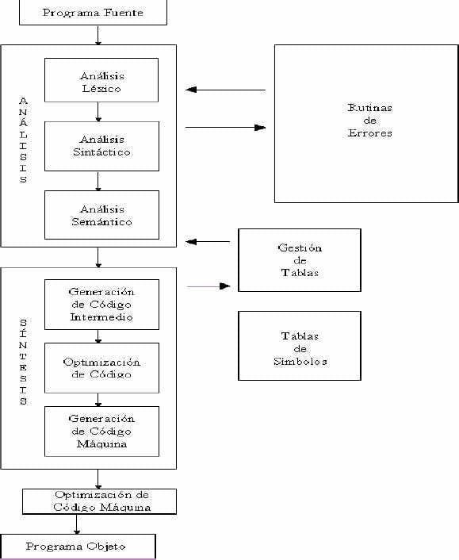

Historia
- 1950: G. M. Hooper acuña el termino compilador y aparecen los primeros trabajos sobre compiladores relacionados con la traducción de fórmulas aritméticas a código de máquina. Adicionalmente, John Backus dirige una investigación den IBM en un lenguaje algebraico.
- 1954: Comienza el desarrollo del lenguaje FORTRAN. Lenguaje cercano a la notación matemática normal generado para evitar dificultades en la programación de calculadoras. Su nombre se formo de las palabras FORmula TRANslating System.
- 1957: FORTRAN como lenguaje de programación es implementado en la IBM 704. Adicionalmente se implementa el concepto de traductor.
- 1958: Se busca dar solución a la portabilidad de un compilador, por lo que surgen las divisiones del compilador en front end y back end (“front end” (analiza el programa fuente) y “back end” (genera código objeto para la máquina objeto)).
- 1959: Se implementan los autómatas AFD y los AFN para el análisis lexico e identificar expresiones regulares. Adicionalmente, se introduce un método parsing de FROTRAN para la introducción de paréntesis en una expresión.
- 1968: Se estudian y definen las GLC, los parsers predictivos y la eliminación de recursividad izquierda.
- 1970: Surgen los primeros programas que automatizan los procesos de análisis léxico y sintáctico. Se genera la torre de babel de la programación por la teoría para la construcción de compiladores.
- 1975: Aparece LEX, un generador automatico de analizadores léxicos a partir de expresiones regulares bajo UNIX. Johnson crea YACC para UNIX, el cual es un generador de analizadores sintácticos.
¿Qué es un compilador?
Un programa intermedio que traduce instrucciones del lenguaje natural (inglés) al lenguaje
interno (instrucciones de código máquina). En este programa pueden distinguirse dos
subprogramas o fases principales: una fase de análisis en la cual se lee el programa fuente, estudiando la estructura
y el significado del mismo; y la fase de síntesis en la que se genera el programa objeto.

¿Qué tipo de compiladores existen?
- Compiladores cruzados: generan código para un sistema distinto del que están funcionando.
- Compiladores optimizadores: realizan cambios en el código para mejorar su eficiencia, pero manteniendo la funcionalidad del programa original.
- Compiladores de una sola pasada: generan el código máquina a partir de una única lectura del código fuente.
- Compiladores de varias pasadas: necesitan leer el código fuente varias veces antes de poder producir el código máquina.
- Compiladores de varias pasadas: necesitan leer el código fuente varias veces antes de poder producir el código máquina.